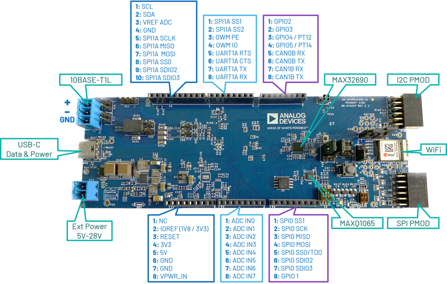
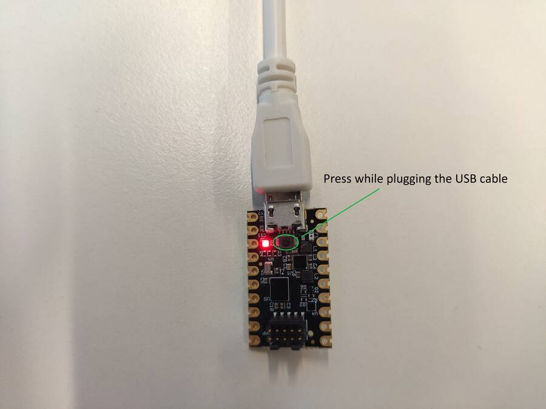

Hardware & Software Guide
Required Hardware
Development kit: AD-APARD32690-SL Microcontroller Board
Power supplies: 5V to 28V at 2A external power supply or 5V USB-C power supply
Programmer: MAX32625PICO or any other similar programmer supporting the SWD interface
AD-APARD32690-SL Board Description
System Setup
Connect the AD-APARD32690-SL to the AD-T1LUSB2.0-EBZ using the single pair Ethernet cable.
Connect the AD-T1LUSB2.0-EBZ to your PC using an USB cable.
Connect the MAX32625PICO programmer, or any programmer supporting the SWD interface, to the AD-APARD32690-SL.
Connect the power supply to the AD-APARD32690-SL.
{kind=link}
Updating the AD-APARD32690-SL firmware
Setting up the MAX32625PICO
To update the board’s firmware, a new bootloader has to be flashed on the MAX32625PICO.
Download the firmware image: MAX32625PICO firmware
Set the MAX32625PICO in MAINTENANCE mode:
Disconnect the MAX32625PICO from the PC and the AD-SWIOT1L-SL board.
Plug the micro USB cable only in the MAX32625PICO.
Keep the button on the MAX32625PICO pressed.
Plug the micro USB cable into the PC.
Once you see the MAINTENANCE drive being mounted, you may release the button.

Drag and drop (to the MAINTENANCE drive) the firmware image you previously downloaded.
After a few seconds, the MAINTENANCE drive will disappear and will be replaced by a drive named DAPLINK. Once this is done, the process is complete, and the MAX32625PICO may be used to flash the firmware of the AD-SWIOT1L-SL board.
{kind=link}
Programming the AD-APARD32690-SL
Connect the MAX32625PICO to the PC using the micro USB cable.
Connect the MAX32625PICO to the AD-APARD32690-SL board using the 10-pin ribbon cable.
Connect the power supply to the AD-APARD32690-SL. Make sure the board is powered up for the next steps.
A DAPLINK drive should appear as mounted on your PC.
Drag and drop the new firmware image into the DAPLINK drive. After a few seconds, the drive will be remounted.
Check the DAPLINK directory and make sure there is no FAIL.TXT file. In case there is, repeat the drag and drop step. Otherwise, you may disconnect the MAX32625PICO from the AD-APARD32690-SL, since the firmware update is complete.
AD-APARD32690-SL Software Stack
The system is accompanied by an open-source software stack and associated collateral, enabling a complete experience from evaluation and prototyping all the way to production firmware and applications development.
The AD-APARD32690-SL firmware is based on Analog Devices’ open-source no-OS framework, which includes all the tools required for embedded code development and debugging as well as libraries enabling host-side connectivity for system configuration and data transfer over the UART or the 10BASE-T1L interfaces. The firmware source code and related documentation can be found on the Analog Devices GitHub at the link above.
Help and Support
For questions and more information, please visit the EngineerZone.